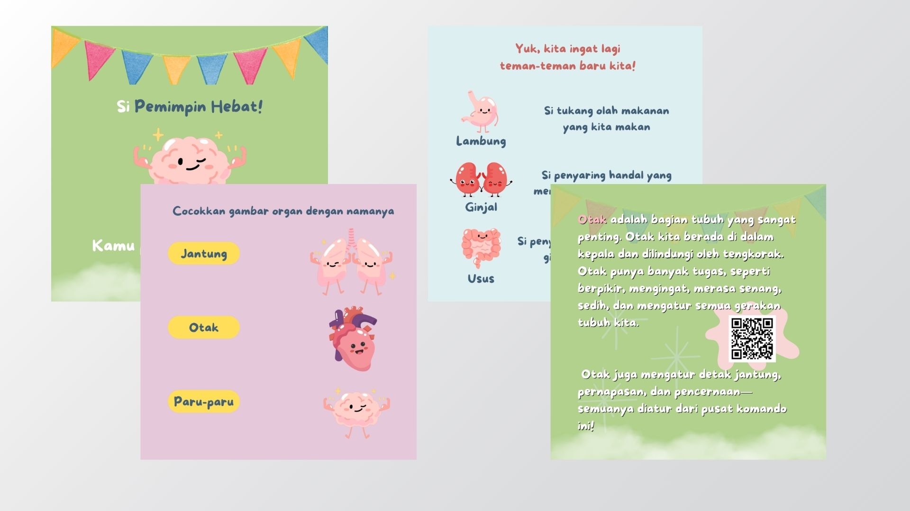
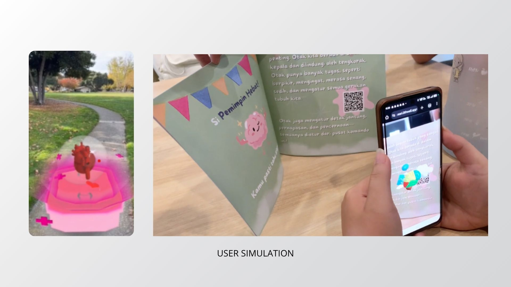

Teman Hebatku
BodyBuddies AR Educational Book

The Problem
Children may find it difficult to understand the functions and locations of internal human organs through text and static illustrations alone. This creates a need for a more interactive and engaging learning experience that helps children explore the human body visually.
The Solution
Teman Hebatku is an educational book enhanced with Augmented Reality (AR) technology to help children learn about human organs interactively. By scanning the book's illustrations, children can explore 3D visualizations of organs such as the brain, heart, lungs, stomach, kidneys, and intestines, making learning more engaging and easier to understand.
The Impact & Key Learnings
Teman Hebatku combines traditional book-based learning with Augmented Reality to create a more interactive way for children to explore human organs. The project supports SDG 4: Quality Education by making science learning more engaging through visual and technology-assisted experiences.
- Gained experience in designing educational books and creating AR-based learning content.
- Learned to present complex information about human organs through engaging visual experiences.
- Developed a better understanding of how interactive technology can support children's learning.
Visuals & Interactive Highlights

